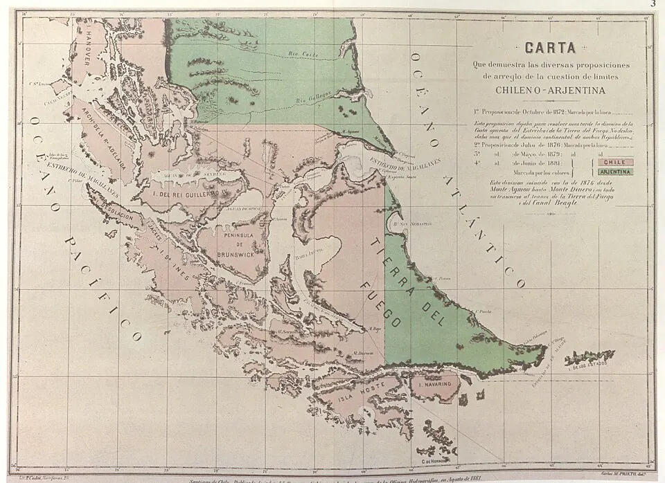

Tratado de Límites con Argentina

Desde la independencia, Chile y Argentina disputaban la Patagonia, el Estrecho de Magallanes y Tierra del Fuego, y a fines de la década de 1870 estuvieron cerca de la guerra. En plena Guerra del Pacífico, y con la mediación de los representantes de Estados Unidos en ambos países, el 23 de julio de 1881 se firmó en Buenos Aires el tratado, suscrito por el cónsul chileno Francisco de Borja Echeverría y el canciller argentino Bernardo de Irigoyen.
El acuerdo fijó la frontera en la cordillera de los Andes, por las cumbres más altas que dividen las aguas; entregó a Chile el estrecho de Magallanes, neutralizado y con libre navegación; dividió Tierra del Fuego con una línea de norte a sur y dejó a Argentina la Patagonia oriental.
En el sur, las altas cumbres y la divisoria de aguas no siempre coinciden, lo que generó nuevas disputas, resueltas en parte por el laudo arbitral británico de 1902; otras, como el Conflicto del Beagle, llegaron después. En Chile se ha debatido si se "perdió" la Patagonia; otros historiadores responden que el país no la ocupaba efectivamente y que aseguró el estrecho. Los pueblos aónikenk y selk'nam, que habitaban esos territorios, no fueron consultados.
Versión para niños
Chile y Argentina no tenían claro dónde terminaba un país y empezaba el otro en el sur. Para no pelear, el 23 de julio de 1881 firmaron un tratado. Acordaron que la frontera seguiría las cumbres más altas de la cordillera de los Andes que dividen las aguas. Chile se quedó con el Estrecho de Magallanes y Argentina con la mayor parte de la Patagonia del lado del Atlántico. La gran isla de Tierra del Fuego se dividió entre los dos países.
Para maestros
Nivel sugerido: 1° medio
Objetivo: Explicar el contenido del Tratado de 1881 y sus efectos en la configuración del territorio chileno, considerando las distintas interpretaciones sobre su resultado.
Preguntas para la clase:
- ¿Por qué Chile y Argentina prefirieron negociar en vez de ir a la guerra?
- ¿Qué problemas trae usar las "altas cumbres" y la "divisoria de aguas" como criterios de límite?
- ¿Qué evidencias usarían para opinar en el debate sobre si Chile "perdió" la Patagonia?
Actividad (20–30 min): Sobre un mapa mudo del extremo sur, los estudiantes dibujan la frontera según el tratado, marcan el estrecho de Magallanes y la división de Tierra del Fuego, y señalan las zonas de disputas posteriores (laudo de 1902, canal Beagle). Cierre con una reflexión sobre los pueblos originarios que habitaban esos territorios.
Fuentes sugeridas: Memoria Chilena; Biblioteca del Congreso Nacional (BCN); Biblioteca Nacional Digital.
Objetivos de Aprendizaje (Currículum Nacional)
- 6° básico · HI06 OA 05 Describir cómo se conformó el territorio de Chile durante el siglo XIX … entre otros factores
- 1° medio · HI1M OA 12 Describir los procesos de exploración y reconocimiento del territorio que impulsó el Estado … delimitar sus fronteras
- 1° medio · HI1M OA 15 Analizar la guerra del Pacífico … y evaluar su proyección en las relaciones con los países vecinos
Revisión humana pendiente. Cómo se revisa · Reportar un error
Cómo citar: Historia de Chile. (2026). Tratado de Límites con Argentina. En Historia de Chile: atlas y línea de tiempo. https://moises-salgado.github.io/historia-de-chile/momento/tratado-de-limites-con-argentina.html